WBSを用いた進捗管理の勘所
プロジェクト管理において、WBSやガントチャートを作成したものの、「プロジェクトの実態と合っていない」「プロジェクトがいつ終わるのかが見通せない」といった悩みを抱える方は少なくありません。せっかく緻密な計画を立てても、進行中の進捗管理や報告が形骸化してしまっては、プロジェクトを確実に完了へと導くことはできません。
進捗管理の勘所として、私がWBSを用いて進捗を管理し、ステークホルダーへ報告する際に意識している基本的な考え方と実践手順をまとめました。なお、各原則を具体的にイメージしやすいよう、先日公開した「夏の琵琶湖ファミリーキャンプ設営のWBSを作ってみた」の最適解モデルを題材として交えながら解説します。
1. 進捗管理とは
「進捗管理」という言葉は日常的に使われますが、その中身を分解すると、大きく分けて2つの独立した役割を持っています。1つはプロジェクトをゴールへと導く「プロジェクトの進行管理」であり、もう1つはプロジェクトの状況を俯瞰的に捉え、関係者に伝える「ステークホルダーへの進捗報告」です。この2つの目的を混同せず、切り分けて捉えることが進捗管理の第一歩となります。
プロジェクトの進行を管理すること
進捗管理の第1の側面は、プロジェクトの現場において作業の進み具合を把握し、ゴールに向けてチームを導く進行管理です。単に「計画通りに進んでいるか」を確認するのではなく、現場で遅れや手戻りが発生した際に、「あとどれだけの作業が残っているのか」を正確に把握し、要員の割り当てや作業順序を組み替えることで、ゴールに間に合わせるよう未来予測をコントロールすることを指します。
ステークホルダーに進捗を報告すること
進捗管理の第2の側面は、現場の外にいるステークホルダーに対して、現在の状況を正確に伝える進捗報告です。ここで必要とされる情報は、「当初計画に対してどのように変化したか」「それはいつ完了するのか」「目標期日に間に合うのか」という確かな見通しです。報告を受ける側が本当に必要としている情報を的確に伝えることで、信頼関係を維持し、必要な意思決定を仰ぐためのコミュニケーションを行います。
これらの進捗管理の考え方を具体的にイメージできるよう、本記事では朝9時開始・11時05分完了予定のファミリーキャンプ設営WBS（図1）を題材として進めます。最上位に各工程の節目となる完了マイルストーンを配置し、家族3人の作業と依存関係を整理した計画に対し、10時、11時、12時と定期的な進捗報告の場面を擬似的に設けながら、進捗をどのように扱い、どう報告していくかを見ていきます。
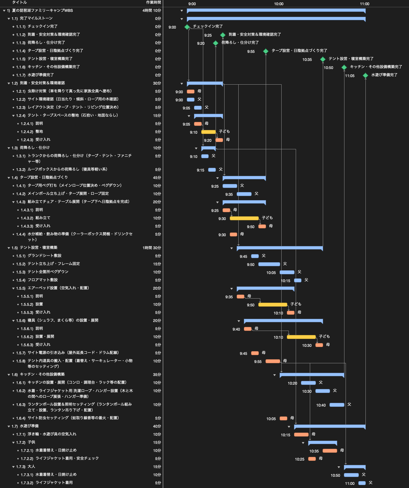
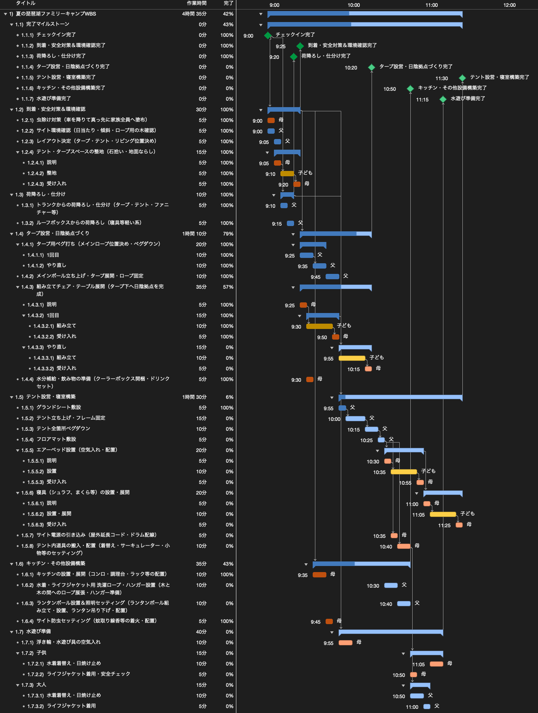
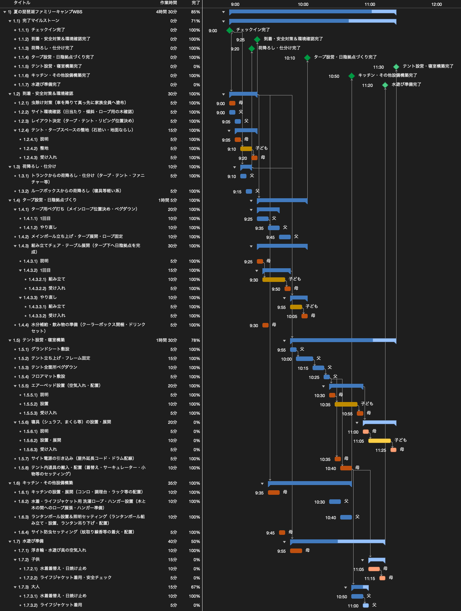
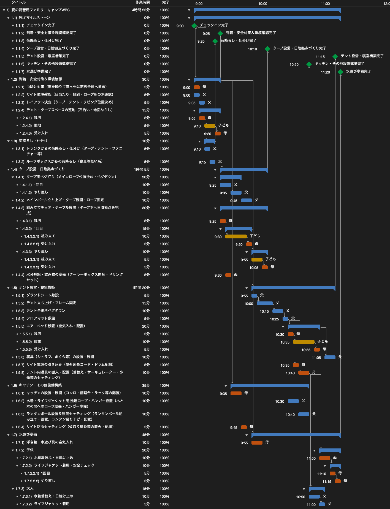
2. 作業実績は達成率で操作しない
プロジェクトが動き出すと、作業の遅れや手戻りが必ず発生します。このとき、WBS上の作業実績をどのように記録するかが、その後の管理の成否を大きく左右します。
作業の遅れは残タスクを追加することで表現する
計画に対して作業が遅れた際、現場でよく見られるのが、未完了タスクの進捗率を「達成率80%」といった作業途中を表す数字にして止める対応です。しかし、私は作業実績を達成率のパーセンテージで操作することはおすすめしません。
達成率80%という数字は、「現時点で予定より遅れている」という過去の事実を表しているに過ぎません。「残りの20%を終わらせるために、あとどれほどの時間や工数が必要なのか」が見えず、結果としていつ完了する見通しなのかの答えが出せなくなるからです。達成率だけで進捗を管理しようとすると、その時点で未来予測が立たなくなります。
私の場合、作業に遅れや手戻りが生じた場合は、対象のタスクをグループタスクに変換し、当初予定していた作業分（1回目）を一度「100%完了」として精算したうえで、必要な残作業タスクを新しく追加します。
例えば今回のキャンプ設営において、父が担当する「1.4.1 タープ用ペグ打ち」で手戻りが発生した場面がまさにこれに当たります。開始時点（9時）の当初計画（図2）では1つの単独タスクでしたが、10時時点で手戻りが生じた際、このタスクをグループタスクへと変換しました。そして配下に、当初予定していた作業分としての「1回目（100%完了）」と、手戻り作業分としての「やり直し（残作業10分）」の2つのタスクを追加することで、遅れと残作業を正確に表現しています（図3）。
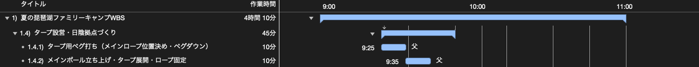
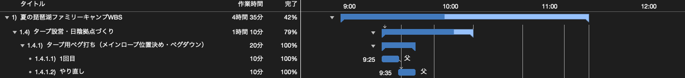
また、子どもの作業に手戻りが生じた「1.4.3 組み立てチェア・テーブル展開」のように、もともと複数の工程に分かれていたタスクでも同様の考え方を適用します。当初計画（図4）では、「説明」「組み立て」「受け入れ」という流れでしたが、組み立てに手戻りが発生した際、元のタスクの作業時間を引き延ばすのではなく、タスク構造を組み替えます。最初の「説明」は手戻りが発生しないためそのまま残し、実作業と受け入れのセットを「1回目（当初予定分）」と「やり直し（手戻り分）」のグループに分割し、残作業タスクを追加します（図5）。
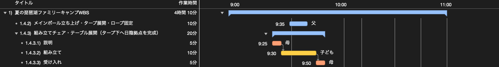
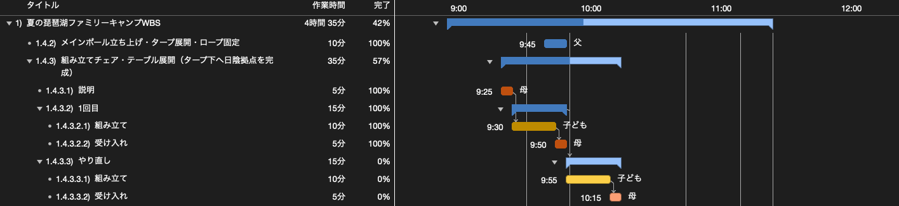
このようにタスクを追加する方式を採れば、図5のように親グループを見ればその作業全体の現在の達成率（%）が把握できると同時に、「あと何分（何時間）の作業が残っているのか」が明確になります。
イナズマ線は使用しない
一方で、私は作業実績を達成率の数字で操作しないため、一般的な進捗管理で広く用いられている「イナズマ線」は使用しません。というか、使用できません。
過去の実績はすべて100%として精算し、遅れは未来への残タスク追加として表現するため、私の作成するWBSにイナズマ線を引いたとしても、そこに凹みは一切生じないからです。現在時刻より左側（過去）はすべて100%で完了しており、現在時刻より右側は未来に残された課題やタスクとして並ぶことになります。
ただ、まれに当初計画は絶対としてイナズマ線を強く求められるケースがあります。経験上、そのような場面ではこちらの考えを理解してもらえることは少ないため、無理に押し通すことはせず、後述する完了マイルストーンのレベルでイナズマ線を見せるようにしています。
3. プロジェクトの進行管理の行い方
それでは、進捗管理の2つの役割のうち、まずは現場における「プロジェクトの進行管理」をどのように行うかについて説明します。現場の進行管理では、WBSを用いて未来予測を行い、計画を組み替えていく具体的なプロセスが求められます。
遅れに対して誰があとどれくらい時間が必要かをWBSに落とし込む
遅れやトラブルが生じた際、「とにかく急ぎます」といった精神論では進行管理は成り立ちません。必要なのは、予定通り完了しなかったタスクにおいて「あとどれくらいの作業時間（工数）が必要なのか」を冷静に見積もり、客観的な数値としてWBSへ落とし込むことです。
すでに説明した通り、当初予定していた作業分（1回目）を一度「100%完了」として精算したうえで、必要な残作業タスクを新しく追加します。作業の担当者も今が何%かで答えるよりも、あとどれくらい時間が必要かを見積もる方が行いやすく、結果として精度の高い工数をWBS上に計上することが可能になります。
また、タスクを消化する中でリソースの実際の生産性が見えてきた場合は、以降のタスクにおいて該当リソースの稼働率を下げて計画し、未来予測の精度向上に努めるといった手法も有効です。今回であれば子どもの稼働率はあらかじめ0.5（50%）で設定していますが、手戻りが続くようであれば、0.25（25%）に下げることを検討してもいいかもしれません。現場の実態に合わせてリソースの稼働率を柔軟に調整することで、無理な前提に基づいた再度の遅れを防ぎ、より確実性の高いスケジュールを組み立てることができます。
必要に応じてタスクや割り当てを変更し、未来をコントロールする
残作業タスクの作業時間と先行・後続の依存関係を設定し、コンピューターの平準化機能を実行すると、未来のガントチャートが自動で再計算されます。これにより、勘や経験に頼ることなく、現在の作業状況のまま進んだ場合のリアルな未来予測が行えます。
例えば11時時点のリソースシート（図6）を見ると、父は11時05分に自身の担当作業を終えて手が空くことが分かります。一方で、未着手で残っている「寝具の設置・展開」は母の説明と子どもの作業、受け入れ確認で計30分を要し、完了が11時30分まで延びて全体のクリティカルパスになっていることが分かります（図7）。残り時間が正確に見えるからこそ、どこがボトルネックになっているのかを的確に把握することができます。
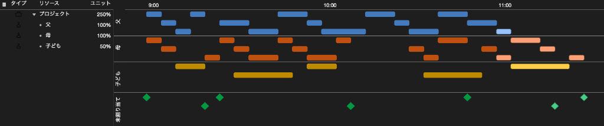
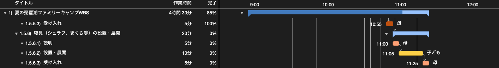
未来予測とボトルネックが可視化されれば、あとは手を打つだけです。キャンプの10時時点では、テントが建つまでテント内作業に入れない母に対して、父のキッチン設置タスクを前倒しで割り当て変更しました。また11時時点では、11時05分に手が空く父が、母と子どもで30分かかる予定だった「寝具の設置・展開」を単独で巻き取り、10分間で終わらせる判断を行いました（図8）。
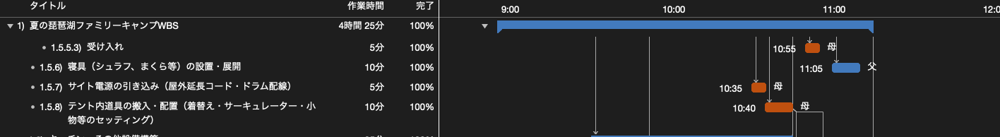
この巻き取りにより、「テント設営完了」は11時30分予定から11時15分へと15分短縮されました。直後に子どものライフジャケット着用で5分の手戻りが発生したものの、巻き取りの効果によって吸収し、当初の11時05分予定に対して15分遅れの11時20分に全工程を完了させています。
遅れが生じた際、ただ担当者に急がせるのではなく、全体を見渡して手の空いたリソースへタスクを再配分する。WBSで未来予測ができるからこそ、このような柔軟なコントロールが可能になります。
4. 進捗報告の行い方
続いて、進捗管理のもう1つの役割である「ステークホルダーへの進捗報告」をどのように行うかについて説明します。
ステークホルダーへの進捗報告は完了マイルストーンで行う
繰り返しになりますが、ステークホルダーへの報告において最も大切なのは、相手の最大の関心事である「いつ完了するのか」に対して、前向きかつ明確に答えることです。WBSはその完了見通しを論理的に算出するためのツールです。したがって、現場の細かなタスクの遅れをそのまま並べて報告するのではなく、あらかじめ設定した「完了マイルストーン」が当初計画からどのように推移したかを軸に報告します。
図1のキャンプの例であれば、「荷降ろし・仕分け完了（9時20分）」「タープ設営完了（9時55分）」「テント設営完了（10時35分）」「水遊び準備完了（11時05分）」が当初計画の完了マイルストーンになります。
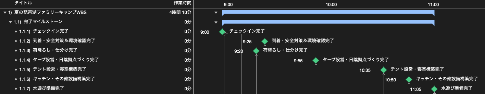
現場で手戻りが発生した際は、作業の追加や前後関係の組み替えによってマイルストーンの到達見込みがリアルタイムに再計算されます。図9の当初計画に対して、手戻りが発生した10時時点のマイルストーン推移を示したのが図10です。タープ設営完了やテント設営完了のマイルストーンが右方向へシフトし、遅れの影響がどの節目に波及しているかが分かります。
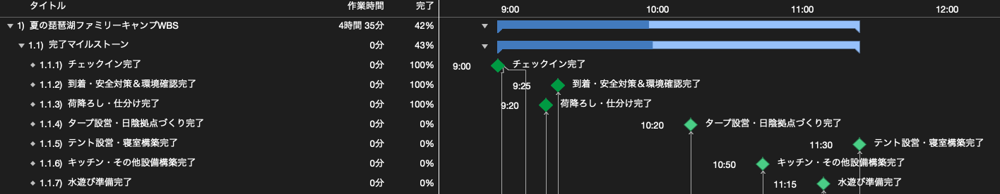
進捗報告の場では、個別の現場タスクの話をするのではなく、この完了マイルストーンの推移と、それに対する対策後の着地見込みを伝えます。手戻りが発生した10時時点であれば、以下のように報告します。
【10時時点の進捗報告例】
荷降ろし・仕分けまでは予定通り完了しました。現在進行中のタープ設営においてペグ打ちとチェア展開の手戻りが発生したため、当初9時55分完了予定だった「タープ設営完了」は25分遅れの10時20分完了予定、当初10時35分完了予定だった「テント設営完了」は55分遅れの11時30分完了予定となっています。
対策として、父が後半に行う予定だったキッチン設置を母へ割り当て変更して前倒しで消化したため、「キッチン構築完了」は予定通り10時50分に完了する見込みです。プロジェクト全体の完了（水遊び準備完了）は、当初の11時05分予定から25分遅れの11時30分を見込んでいます。
続く11時時点（図11）では、チェア組み立ての手戻りが当初見込みより早く終わり、タープ設営完了が10時10分へと短縮されました。またキッチン構築も10時50分に完了し、全7マイルストーンのうち5つ（71%）が達成済みとなっています。その一方で、後続の寝具設置に時間を要するため、テント設営完了が11時30分まで延びて全体のボトルネックになっている状況が浮かび上がります。
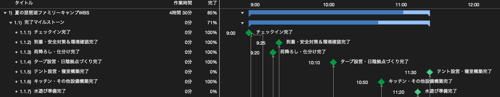
【11時時点の進捗報告例】
タープ設営はチェア組み立ての手戻りが前倒しで進み、予定より10分早い10時10分に完了しました。またキッチン構築も予定通り10時50分に完了し、全7マイルストーンのうち5つを達成しています。
現在の課題として、テント本体の設営は順調ですが、後続の寝具設置に時間を要するため「テント設営完了」は11時30分まで延びており、全体の完了は11時20分（当初計画比15分遅れ）となる見通しです。これに対し、11時05分に手が空く父が寝具設置を巻き取ることで、完了の前倒しを目指します。
そして全工程が完了した12時時点（図12）では、父による寝具設置の巻き取り効果によってテント設営完了が11時15分へ15分短縮され、最終マイルストーンである水遊び準備完了も11時20分に完了した実績が記録されています。
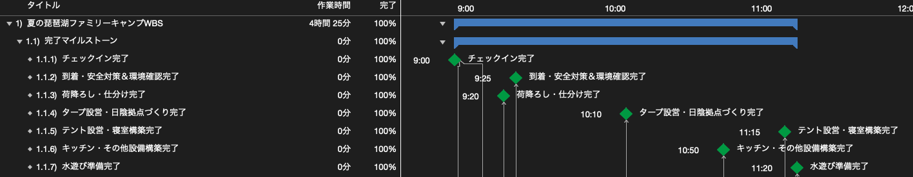
【12時時点（完了報告）の進捗報告例】
11時05分より父が寝具設置の作業を巻き取った結果、「テント設営完了」は予定より15分早い11時15分に達成されました。直後に子どものライフジャケット着用で安全点検の手戻り（5分）が発生したものの、巻き取りによる余力で吸収し、最終マイルストーンである「水遊び準備完了」は11時20分に完了いたしました。
以上で設営工程の全7マイルストーンは完了となりましたが、当初計画（11時05分）に対しては15分遅れで完了しております。
このように完了マイルストーンを軸にして各時間帯で報告を行えば、ステークホルダーは「どの節目がどれくらいズレて、どのような対策によって最終的にいつ終わるのか」を一貫して把握できます。そのうえで、もし「遅れているチェアの展開は今どうなっているのか」と詳細を問われた場合でも、グループタスクを見れば「現時点で達成率は57%で、手戻り作業としてあと15分を見込んでいます」と、具体的かつ定量的な根拠をもって即座に回答できます。
終わりに
プロジェクトが完了した時点のWBSには、何にどれだけの時間を要し、どこで手戻りが発生し、誰がどのように助けに入ったのかという、プロジェクトが通ってきた軌跡がそのまま残ります。
作業実績を達成率のパーセンテージでごまかさず、遅れを残タスクの追加として未来に積み直す。そして、その見通しをもとに未来予測を行ってタスクをコントロールし、ステークホルダーには完了マイルストーンで明確に報告する。この一連のサイクルを回し続けることこそが、進捗管理の本質であり、プロジェクトを確実に成功へ導く道筋となります。
そして、そうして刻まれた化粧っけのないリアルなWBSは、次回のプロジェクトにおける見積もりやスケジュール設計の精度を高めるための、何物にも代えがたい確かな資産になるはずです。皆さんもぜひ一度、チャレンジしてみていただければと思います。
なお、プロジェクト計画の基礎となるWBSの作成手順や平準化の考え方について詳しく知りたい方は、「WBSの勘所」や「ガントチャートの決め手は平準化」もぜひ合わせてご覧ください。また、今回題材として用いたキャンプ設営のベース計画については「夏の琵琶湖ファミリーキャンプ設営のWBSを作ってみた」にて詳しく解説しています。
最後までお読みいただきありがとうございました。